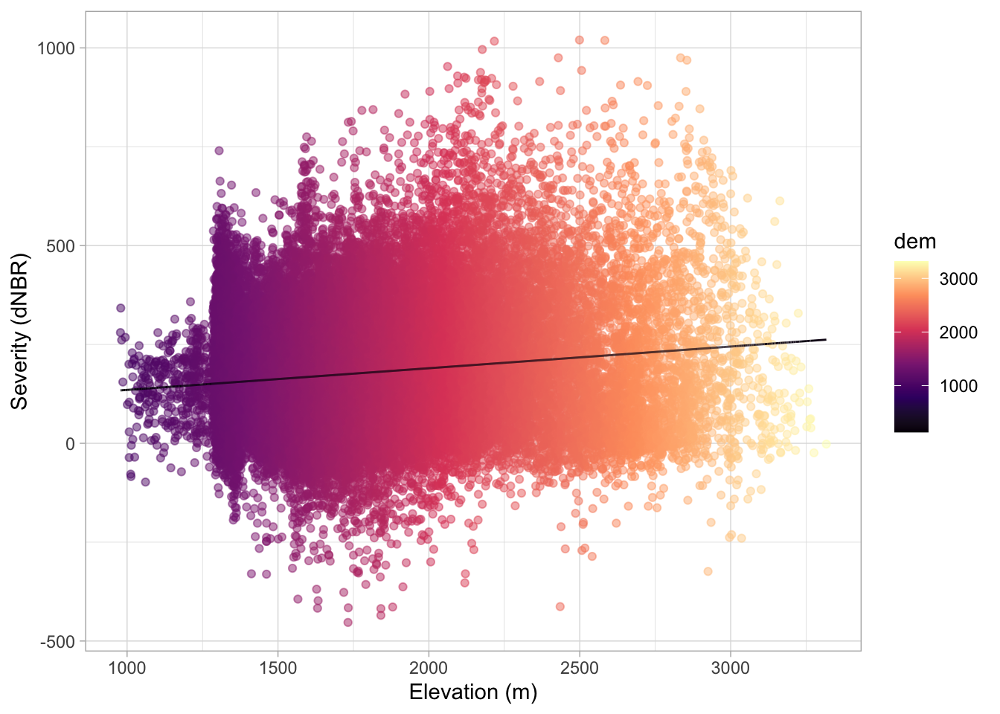
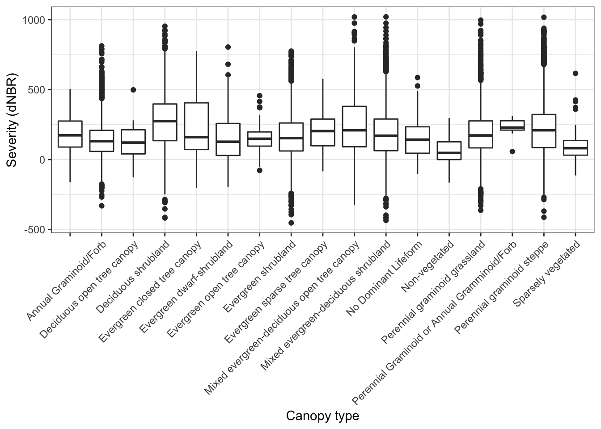
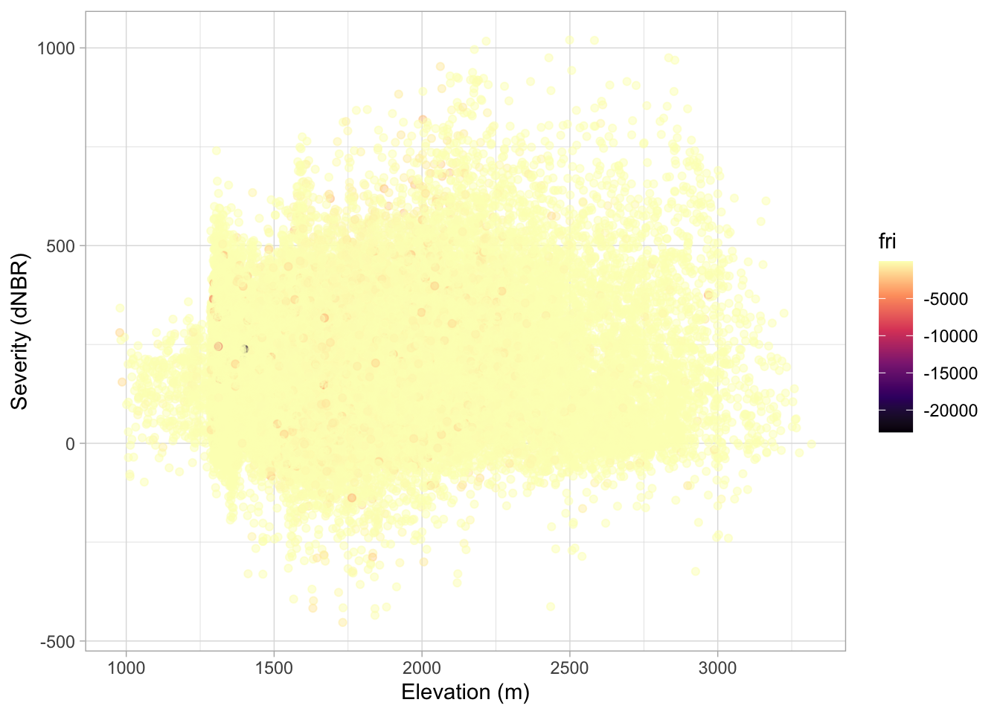
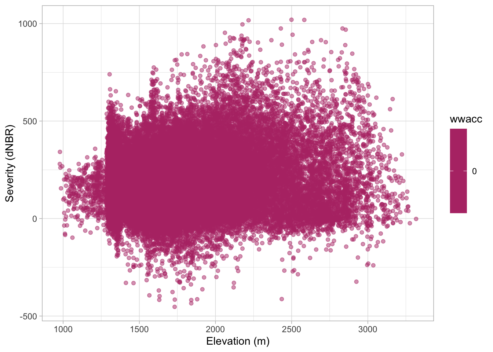
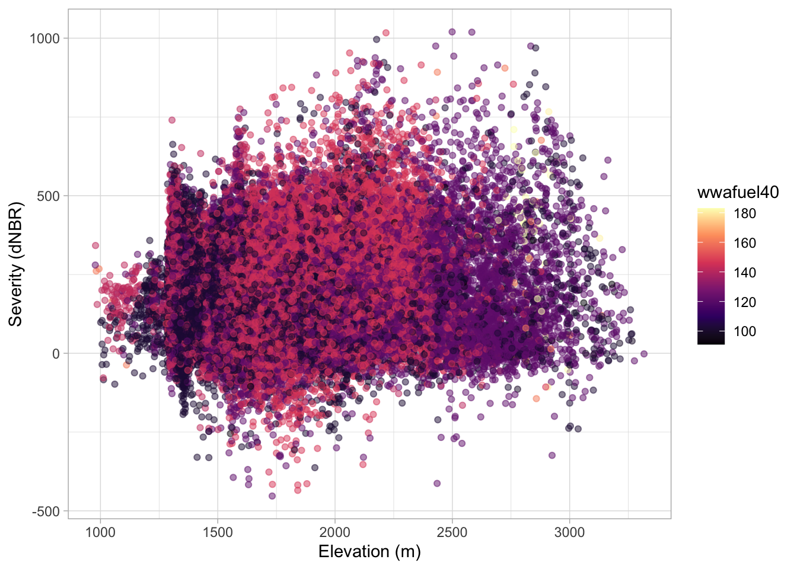
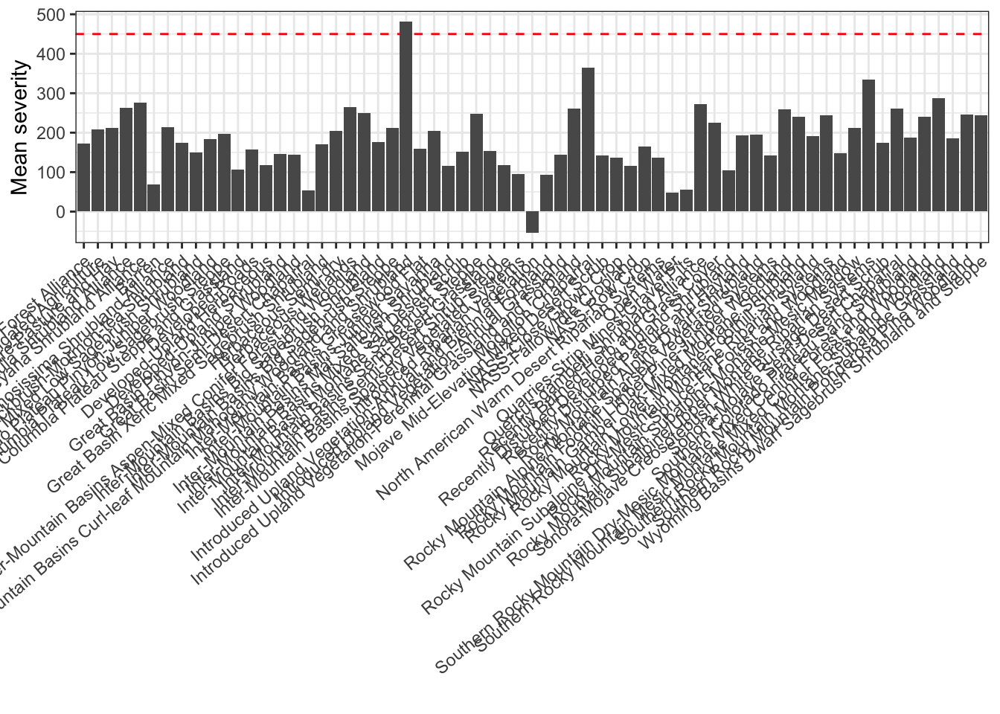

Chapter 6 Non-forest data visualization
Load packages
Simple scatter plot of non-forest severity vs. elevation (m)
sev <- nf_topo %>%
left_join(severity, by = "severity_id") %>%
select(dem, severity)
reg <- lm(formula= severity ~ dem, data = sev)
regs <- predict(reg, se.fit = TRUE)
regs <- data.frame(mean = regs$fit,
upr = regs$fit + 1.96 * regs$se.fit,
lwr = regs$fit - 1.96 * regs$se.fit)
nf_topo %>%
left_join(severity, by = "severity_id") %>%
select(dem, severity) %>%
ggplot(aes(x = dem, y = severity, color= dem)) +
geom_point(alpha = 0.5) +
scale_color_viridis_c(option = "magma") +
geom_line(aes(y = regs$mean, color = regs$mean)) +
labs(y = "Severity (dNBR)", x = "Elevation (m)") +
theme_light() 
nf_veg %>%
left_join(severity, by = "severity_id") %>%
filter(!is.na(severity_id)) %>%
ggplot(aes(x = NVCSsubclass, y = severity)) +
geom_boxplot() +
labs(y = "Severity (dNBR)", x = "Canopy type") +
theme_bw() +
theme(axis.text.x = element_text(angle = 45, hjust = 1)) 
Bar plot of non-forest canopy categories.
nf_topo %>%
left_join(severity, by = "severity_id") %>%
left_join(nf_risk, by = "severity_id") %>%
select(dem, fri, severity) %>%
ggplot(aes(x = dem, y = severity, color = fri)) +
geom_point(alpha = 0.5) +
scale_color_viridis_c(option = "magma") +
labs(y = "Severity (dNBR)", x = "Elevation (m)") +
theme_light() 
Elevation x severity x fire risk index
nf_topo %>%
left_join(severity, by = "severity_id") %>%
left_join(nf_structure, by = "severity_id") %>%
ggplot(aes(x = dem, y = severity, color = wwacc)) +
geom_point(alpha = 0.5) +
scale_color_viridis_c(option = "magma") +
labs(y = "Severity (dNBR)", x = "Elevation (m)") +
theme_light() 
Elevation x severity x canopy closure. This figures illustrates that non-forest landcover has no discernable canopy.
nf_topo %>%
left_join(severity, by = "severity_id") %>%
left_join(nf_structure, by = "severity_id") %>%
ggplot(aes(x = dem, y = severity, color = wwafuel40)) +
geom_point(alpha = 0.5) +
scale_color_viridis_c(option = "magma") +
labs(y = "Severity (dNBR)", x = "Elevation (m)") +
theme_light()
Elevation x severity x fuels40
Mean severity by vegetation type
## [1] "Inter-Mountain Basins Mixed Salt Desert Scrub"
## [2] "Rocky Mountain Gambel Oak-Mixed Montane Shrubland"
## [3] "Herbaceous Semi-dry"
## [4] "Inter-Mountain Basins Big Sagebrush Shrubland"
## [5] "Introduced Upland Vegetation-Annual Grassland"
## [6] "Artemisia tridentata ssp. vaseyana Shrubland Alliance"
## [7] "NASS-Fallow/Idle Cropland"
## [8] "Sonora-Mojave Semi-Desert Chaparral"
## [9] "Inter-Mountain Basins Big Sagebrush Steppe"
## [10] "Quercus gambelii Shrubland Alliance"
## [11] "Colorado Plateau Mixed Low Sagebrush Shrubland"
## [12] "Inter-Mountain Basins Greasewood Flat"
## [13] "Rocky Mountain Subalpine-Montane Mesic Meadow"
## [14] "Great Basin Xeric Mixed Sagebrush Shrubland"
## [15] "NASS-Close Grown Crop"
## [16] "Inter-Mountain Basins Semi-Desert Shrub-Steppe"
## [17] "Colorado Plateau Pinyon-Juniper Woodland"
## [18] "Rocky Mountain Foothill Limber Pine-Juniper Woodland"
## [19] "Inter-Mountain Basins Semi-Desert Grassland"
## [20] "Inter-Mountain Basins Montane Sagebrush Steppe"
## [21] "Great Basin Semi-Desert Chaparral"
## [22] "Inter-Mountain Basins Aspen-Mixed Conifer Forest and Woodland"
## [23] "Developed-Upland Shrubland"
## [24] "Agriculture-Pasture and Hay"
## [25] "Rocky Mountain Lower Montane-Foothill Shrubland"
## [26] "Recently Disturbed Pasture and Hayland"
## [27] "Introduced Upland Vegetation-Perennial Grassland and Forbland"
## [28] "Developed-Upland Herbaceous"
## [29] "Inter-Mountain Basins Curl-leaf Mountain Mahogany Woodland and Shrubland"
## [30] "Abies concolor Forest Alliance"
## [31] "North American Warm Desert Riparian Systems"
## [32] "Colorado Plateau Blackbrush-Mormon-tea Shrubland"
## [33] "Introduced Upland Vegetation-Annual and Biennial Forbland"
## [34] "Barren"
## [35] "Columbia Plateau Low Sagebrush Steppe"
## [36] "Inter-Mountain Basins Juniper Savanna"
## [37] "Wyoming Basins Dwarf Sagebrush Shrubland and Steppe"
## [38] "Developed-Roads"
## [39] "Mojave Mid-Elevation Mixed Desert Scrub"
## [40] "Coleogyne ramosissima Shrubland Alliance"
## [41] "Southern Rocky Mountain Mesic Montane Mixed Conifer Forest and Woodland"
## [42] "Rocky Mountain Alpine/Montane Sparsely Vegetated Systems"
## [43] "Inter-Mountain Basins Mat Saltbush Shrubland"
## [44] "Great Basin Pinyon-Juniper Woodland"
## [45] "Southern Rocky Mountain Montane-Subalpine Grassland"
## [46] "Arctostaphylos patula Shrubland Alliance"
## [47] "Rocky Mountain Subalpine Dry-Mesic Spruce-Fir Forest and Woodland"
## [48] "Inter-Mountain Basins Sparsely Vegetated Systems"
## [49] "Mogollon Chaparral"
## [50] "Columbia Plateau Steppe and Grassland"
## [51] "Herbaceous Wetlands"
## [52] "Rocky Mountain Montane Riparian Systems"
## [53] "Quarries-Strip Mines-Gravel Pits"
## [54] "Rocky Mountain Alpine Dwarf-Shrubland"
## [55] "Introduced Riparian Vegetation"
## [56] "Southern Rocky Mountain Dry-Mesic Montane Mixed Conifer Forest and Woodland"
## [57] "Southern Colorado Plateau Sand Shrubland"
## [58] "Recently Burned-Herb and Grass Cover"
## [59] "Open Water"
## [60] "NASS-Row Crop"
## [61] "Sonora-Mojave Creosotebush-White Bursage Desert Scrub"
## [62] "Recently Disturbed Developed Upland Shrubland"
## [63] "Agriculture-Cultivated Crops and Irrigated Agriculture"
## [64] "Southern Rocky Mountain Ponderosa Pine Woodland"
## [65] "Rocky Mountain Subalpine/Upper Montane Riparian Systems"Lets check out the mean severity for each of these forest types. The red dashed line is the high-severity threshold.
nf_veg %>%
left_join(severity, by = "severity_id") %>%
group_by(EVT) %>%
summarise(mean_severity = mean(severity, na.rm = TRUE)) %>%
ggplot(aes(x = EVT, y = mean_severity)) +
geom_hline(yintercept = 450, linetype = "dashed", color = "red") +
geom_bar(stat = "identity") +
labs(x = " ", y = "Mean severity") +
theme_bw() +
theme(axis.text.x = element_text(angle = 40, hjust = 1)) 